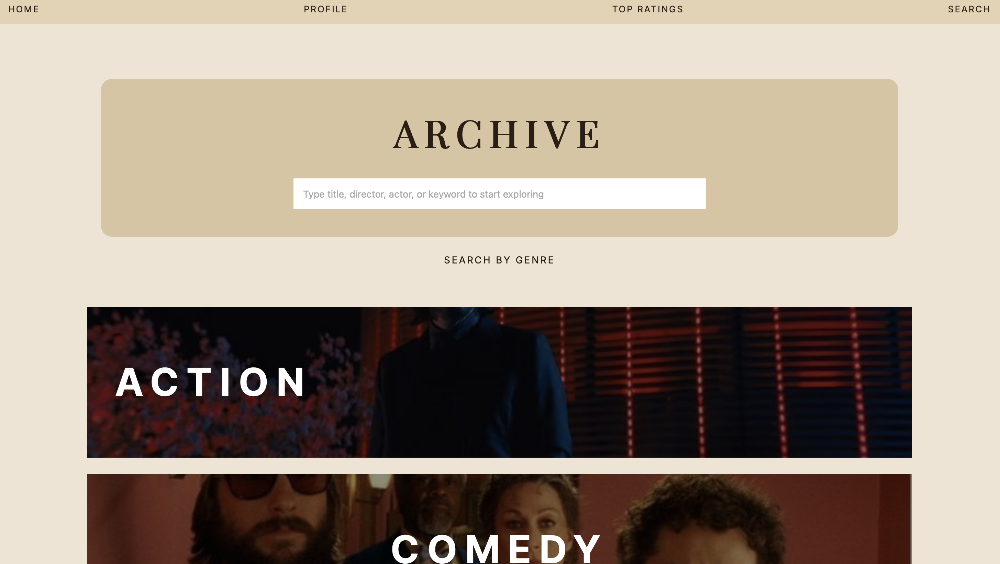
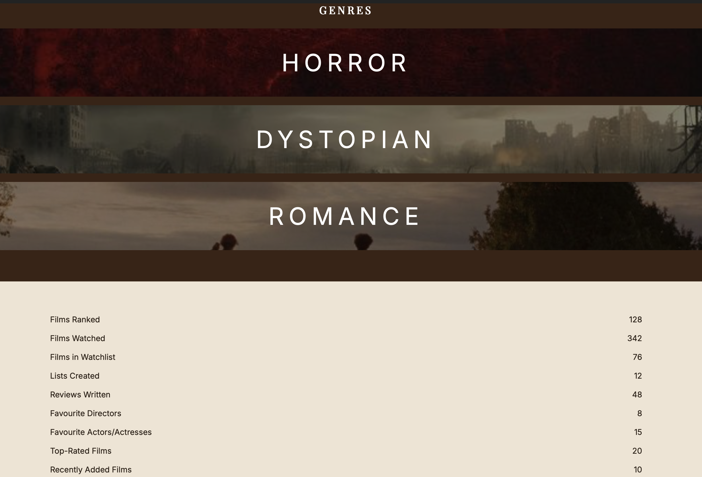

Curated
Frames
A film-centered website concept designed as a personal space to collect, organize, and explore movies through a visually curated experience.
About the Project
Curated Frames is a website I designed around my love of film and visual storytelling. The idea was to create a cinematic digital space where users could search, sort, and reflect on the movies that shape them.
I wanted the site to feel elevated and editorial while still being easy to navigate. The design uses a soft neutral palette, strong typography, poster imagery, and structured layouts to make the experience feel organized and intentional.
This project reflects the kind of work I enjoy most: combining branding, UX thinking, and visual design into an interface that feels both personal and polished.
Project Details



What This Project Shows
Reflection
Curated Frames was a chance for me to bring together my interest in film and my interest in digital design. It helped me explore how an interface can feel emotional, organized, and branded all at once. More than anything, this project reflects the type of work I want to keep making: thoughtful digital experiences built around strong concepts and strong visuals.